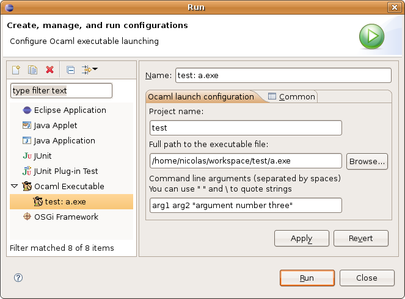

You can configure the parameters to pass to your executable on the command-line by opening the launch configuration dialog, by right-clicking on the executable, and selecting Run As > Open Run Dialog... or by clicking on Run > Open Run Dialog... in the main menu.
You should get the following dialog:

If you have already run the executable once (as explained in Running an O'Caml executable), a launch configuration has already been created for you: click on it in the right panel. If not, create it now by right-clicking on OCaml Executable and selecting New. If you create a launch configuration manually, you must also specify the project name and the full path to the executable.
Then, you can enter your command-line parameters, separated by spaces. You can use spaces in arguments by quoting them (with " "), and you can include double-quotes by escaping them with the "\" character.